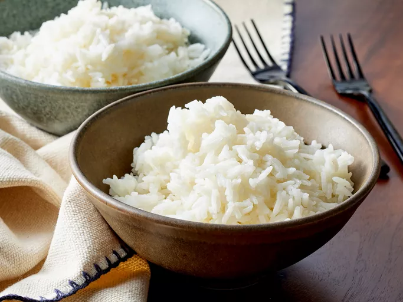

Back to Home
Jasmine Rice

A bowl of Jasmine rice
Jasmine rice stands out as a simple yet fantastic side
dish due to its unique and irreplaceable flavor and smell.
Ingredients
- 1 cup of Jasmine rice.
- 1 to 1 1/4 cups of water.
- 1/2 teaspoon of salt.
Steps
-
Place rice in a fine-mesh strainer. Rinse rice with cold water until
water runs clear. Drain completely.
- Add rice, 1 1/4 cups water, and salt to a medium saucepan.
- Bring to a boil over medium-high heat.
-
Reduce heat, cover, and simmer for 10 minutes, or until water is
absorbed. Remove from heat and let stand, covered, for 10 minutes.
- Fluff with a fork before serving.